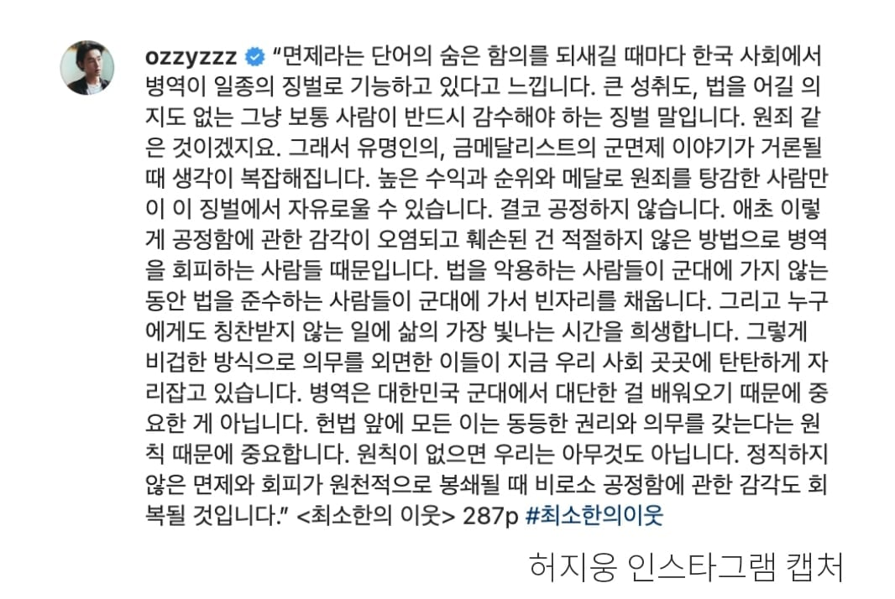

ㄹㅇ

ㄹㅇ
나도 국제무대 수상했다
연금내놔 쓉
시간이 돈이 되는 시대라서 더욱 더 징벌이지
부자들은 그 시간의 가치를 아니까 더욱 발버둥쳤던거고
서울 집값도 결국 시간의 가치가 올라서 그렇지
징벌 맞는데 뭐 걍 현행 유지하자
사회복무요원 징집 하는 이유가 몸아프다고 안가면 군대 간애들이 억울하잖아 ? 이거 아님 ?
병신들 다 불러서 강제로 노동시키고 운동선수들 메달 딴다고 면제시키는거 존나 미개하지
걍 한국이 고도성장을 끝마쳐서 그런 듯함
개발도상국일 때는 국가의 국제적 위상이나 브랜드 가치를 끌어올리는 게 전국민에게 이익이라는 데 합의가 됐다면
지금은 딱히 개개인한테는 체감이 안 될 뿐더러
엘리트 체육 말고도 다른 분야에서 이미 위상이 훨씬 높으니 아쉬울 것도 없는 거지
기지 예전엔 심슨가족 극장판에 한글 나왔다고 막 난리도 아니었고 뭐 미국 영화속 한국 이런식으로 국뽕에 목말라 있었는데 이제는 너무 당연한거라 한국 모르면 오히려 좀 무식하네 할정도니
인간 역사상 참정권 확대라는 개념 자체가 전쟁이랑 크게 엮여있음
중세시대 개돼지농노들 아무리 모여서 들고일어나봐야 살육병기 기사들 상대로는 아무것도 못하던 시절에는 참정권 같은거 1도 없었는데
나중에 총의 시대가 오고 방아쇠 한번 딸깍으로 기사를 죽일 수 있게 된 시대가 오니까 농노들이 시민으로 진화하게 된거임
여성참정권 이런것도 본격적으로 여성들이 후방에서 전쟁에 기여할 수 있는 근대쯤 되어서야 나온 개념이고